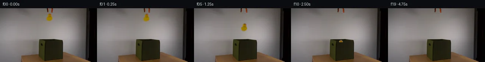
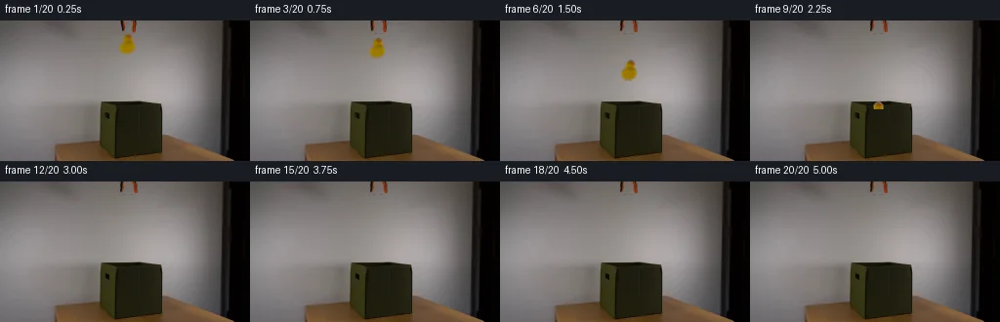
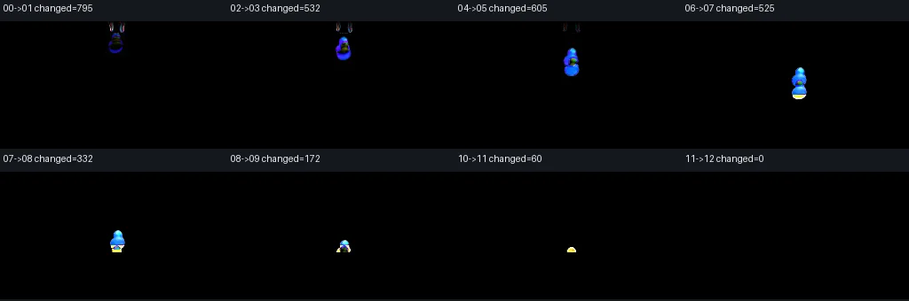

V0 · 初版即最终版
![]()
Observable Generation Trace
把最终像素视频、Harness 冻结的每轮候选、真实工具事件和 Agent 自述放在同一页。可观测证据与模型自述分开标记，避免把“模型说它检查过”误当成真实工具调用。
![首帧]()
Static locked-off single-shot with fixed frame throughout filmed with constant framerate in real-time. The scene shows a realistic scientific demonstration. The scene only contains the described setup and actions. An orange-black grabber tool is suspended above the open dark green fabric box on a wooden table. The orange-black grabber tool releases the yellow rubber duck above the open dark green fabric box.
首帧显示在左侧播放器初始画面。Track 权限、隔离和 tensor 一致性来自 run manifest，而不是 METHOD.md。
上方并排显示初版和最终版，默认同步播放；下方每个版本可独立播放，也可勾选加入同步播放。仅检查图更新的连续重复快照已合并，回退旧视频仍保留为一次修订。
Observable events
来源：events.jsonl + run manifest
此 Track 禁止读取输出图片。逐轮预览由外部 Harness 自动冻结，只用于事后审计，生成 Agent 当时看不到这些页面。
Frozen candidates
每张图来自该 round 的真实 00 / 01 / 05 / 10 / 19 帧

pixels 28aed1922158e8ed · code e9fae198a9f21bd4
--- previous/generate.py
+++ current/generate.py
@@ -0,0 +1,200 @@
+from pathlib import Path
+import hashlib
+
+import numpy as np
+from PIL import Image, ImageDraw
+
+import artifact_io
+
+
+ROOT = Path(__file__).resolve().parent
+SOURCE_PATH = ROOT / "first_frame.png"
+
+
+def interpolated_wall(source: np.ndarray) -> np.ndarray:
+ """Replace the small hanging-tool/duck rectangle with local wall samples."""
+ clean = source.astype(np.float32).copy()
+ # Both sampling strips are safely outside the suspended object. Medians
+ # suppress single-pixel sensor noise while retaining the wall's row-wise
+ # illumination gradient.
+ for y in range(0, 38):
+ left = np.median(source[y, 116:120].astype(np.float32), axis=0)
+ right = np.median(source[y, 143:147].astype(np.float32), axis=0)
+ for x in range(119, 143):
+ u = (x - 119) / 23.0
+ value = left * (1.0 - u) + right * u
+ # A restrained deterministic texture residual prevents the narrow
+ # repair from becoming conspicuously flat.
+ texture = float(source[y, 117 + ((x - 119) % 3), 0]) - float(
+ np.mean(source[y, 116:120, 0])
+ )
+ clean[y, x] = value + np.clip(texture, -1.5, 1.5)
+ return np.clip(np.rint(clean), 0, 255).astype(np.uint8)
+
+
+def alpha_from_difference(source: np.ndarray, background: np.ndarray,
+ bounds: tuple[int, int, int, int],
+ low: float = 4.0, high: float = 28.0) -> Image.Image:
+ """Extract photographed foreground pixels using their wall difference."""
+ x0, y0, x1, y1 = bounds
+ rgb = source[y0:y1, x0:x1]
+ bg = background[y0:y1, x0:x1]
+ distance = np.linalg.norm(rgb.astype(np.float32) - bg.astype(np.float32), axis=2)
+ alpha = np.clip((distance - low) / (high - low), 0.0, 1.0)
+ # Smooth only the fractional matte; strong interior pixels stay opaque.
+ alpha = np.where(distance >= high, 1.0, alpha)
+ rgba = np.dstack((rgb, np.rint(alpha * 255).astype(np.uint8)))
+ return Image.fromarray(rgba, "RGBA")
+
+
+def make_open_tool_layer(source: np.ndarray, clean: np.ndarray, openness: float) -> Image.Image:
+ """Make the two grabber prongs pivot outward from their cropped top anchors."""
+ canvas_size = (source.shape[1], source.shape[0])
+ layer = Image.new("RGBA", canvas_size, (0, 0, 0, 0))
+ # The halves overlap by one column so the central highlight has no seam.
+ for bounds, direction in [((119, 0, 132, 14), -1.0), ((131, 0, 143, 14), 1.0)]:
+ patch = alpha_from_difference(source, clean, bounds, low=4.0, high=24.0)
+ local = Image.new("RGBA", canvas_size, (0, 0, 0, 0))
+ local.paste(patch, (bounds[0], bounds[1]), patch)
+ # PIL requests an inverse affine mapping. At y=0 the prong is fixed;
+ # by y=13 it has moved outward by `openness` pixels.
+ shear = direction * openness / 13.0
+ inverse_shear = -shear
+ moved = local.transform(
+ canvas_size,
+ Image.Transform.AFFINE,
+ (1.0, inverse_shear, 0.0, 0.0, 1.0, 0.0),
+ resample=Image.Resampling.BICUBIC,
+ )
+ layer = Image.alpha_composite(layer, moved)
+ return layer
+
+
+def make_duck_patch(source: np.ndarray, clean: np.ndarray) -> Image.Image:
+ # This crop includes the antialiased outline and the small soft cast shadow.
+ return alpha_from_difference(source, clean, (119, 13, 143, 37), low=3.5, high=22.0)
+
+
+def paste_centered(base: Image.Image, patch: Image.Image, center: tuple[float, float],
+ angle: float) -> None:
+ rotated = patch.rotate(
+ angle,
+ resample=Image.Resampling.BICUBIC,
+ expand=True,
+ fillcolor=(0, 0, 0, 0),
+ )
+ x = int(round(center[0] - rotated.width / 2.0))
+ y = int(round(center[1] - rotated.height / 2.0))
… diff truncated; 113 more lines …pixels 28aed1922158e8ed · code 46235504b205e39d
--- previous/generate.py
+++ current/generate.py
@@ -44,7 +44,7 @@
# Smooth only the fractional matte; strong interior pixels stay opaque.
alpha = np.where(distance >= high, 1.0, alpha)
rgba = np.dstack((rgb, np.rint(alpha * 255).astype(np.uint8)))
- return Image.fromarray(rgba, "RGBA")
+ return Image.fromarray(rgba)
def make_open_tool_layer(source: np.ndarray, clean: np.ndarray, openness: float) -> Image.Image:
@@ -96,7 +96,7 @@
rim_y = 91.2 - 0.061 * (xx - 118)
occluder = (xx >= 103) & (xx <= 167) & (yy >= rim_y)
arr[occluder] = source[occluder]
- frame.paste(Image.fromarray(arr, "RGB").convert("RGBA"), (0, 0))
+ frame.paste(Image.fromarray(arr).convert("RGBA"), (0, 0))
def render_frames() -> np.ndarray:
@@ -118,7 +118,7 @@
# copy of the locked source shot.
base_arr = source.copy()
base_arr[0:38, 119:143] = clean[0:38, 119:143]
- frame = Image.fromarray(base_arr, "RGB").convert("RGBA")
+ frame = Image.fromarray(base_arr).convert("RGBA")
frame = Image.alpha_composite(frame, make_open_tool_layer(source, clean, openness[t]))
# Once the duck is below the near rim (frame 12 onward), it is fully
@@ -155,7 +155,7 @@
x = (i % 4) * 256
y = (i // 4) * 170
draw.text((x + 4, y + 3), f"{a:02d}->{b:02d} changed={changed}", fill=(240, 240, 240))
- sheet.paste(Image.fromarray(view, "RGB"), (x, y + 24))
+ sheet.paste(Image.fromarray(view), (x, y + 24))
sheet.save(ROOT / "transition_check.png")
Final visual checks
Harness 保存的最终产物


Agent claims
以下文字由生成 Agent 撰写，不等同于工具证据
The source duck area will be restored from nearby wall samples with row-wise interpolation and local texture residuals. Later duck poses will be created by masked affine transforms of its source pixels. The grabber release will be a restrained local pixel edit limited to its existing upper-edge region. All motion is rendered into the original frame, preserving the locked-off shot.
I generated the continuation with local Python pixel operations using Pillow and NumPy. No external images, models, masks, engines, or network resources were used.
Frame 00 is the original PNG without modification. For later frames, I estimated the small patch of wall behind the duck and grabber by interpolating between unaffected pixel strips on the left and right, retaining a small row-local texture residual. Foreground alpha mattes for the source duck and the two grabber prongs were derived from their per-pixel color distance to that reconstructed wall.
The grabber release is a mild affine pivot of its two photographed halves about anchors at the cropped top edge. The duck itself is the photographed source duck, moved with a masked affine rotation. Its vertical positions follow an accelerating fall, followed by a small damped rebound in the fabric opening. At the box opening, the measured near-rim/front-panel region from the original photograph is restored over the moving duck, producing progressive physical occlusion. From frame 12 onward the duck is fully inside the box and the held shot is static.
artifact_io.save writes the 20 PNG frames, the packed uint32 0xRRGGBB tensor, the inspection contact sheet, and the standalone HTML player. transition_check.png is a programmatically generated sheet of amplified per-pixel transition differences and changed-pixel counts. The generator then verifies frame 00, every decoded PNG, and every packed tensor value against the in-memory RGB frames. Later-frame outputs were assessed only through these local numeric checks; they were not opened with an image viewing tool.